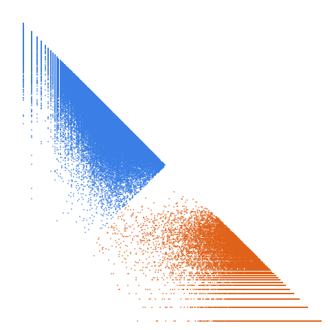

Numbers that are the sum of 3 positive cubes in more than one way

Open in the 3-D viewerA008917 on the OEIS
| Terms | 100,000 (n = 1 … 100,000) |
|---|---|
| Decomposable (a > 2d) | 99,999 |
| Level class, k > L | 34,528 · 34.53 % |
| Weight class, k ≤ L | 65,471 · 65.47 % |
| Ties, k = L | 2 |
| On the level line L = 1 | 7,193 |
| Forced level, l ≤ d² | 146 |
| Range of a(n) | 251 … 7,011,775 |
| Range of the jump d | 1 … 812 |
| Largest weight k, level L | 7,011,491, 3,504,280 |
509 different gaps occur, from 1 to 812; the level share is 34.53 %.
The decomposition
Every term of a strictly increasing sequence is written a(n) = k(n)·L(n) + d(n): the jump d = a(n+1) − a(n), the weight k the least divisor of a − d greater than d, the level L = (a − d)/k. A term decomposes when a > 2d; it is in the level class when k > L and in the weight class when k ≤ L. See decompwlj.com and arXiv:0711.0865, or how it works, with worked examples and a live one.